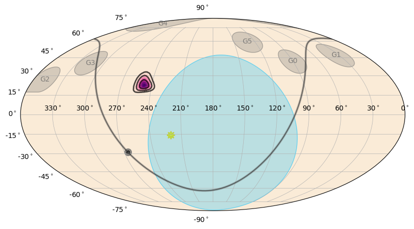
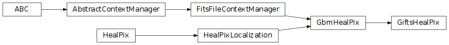

GIFTS Localizations (gdt.missions.gifts.localization)¶
Note
The GIFTS localization data implementation and this document are currently based on those provided by the Fermi Gamma-ray Data Tools, and will be revised in future versions.
As part of mission operations, GIFTS wil produce localizations for GRBs and disseminate these to the community. GCN notices will be sent to interested follow-up observers containing brief summary information, and HEALPix FITS files containing the localization will be created and hosted in the GIFTS catalog. These localizations contain the best-modeled systematic uncertainty in the localization along with assorted metadata such as the individual detector pointings and the geocenter location as observed by GIFTS.
We can read one of these HEALPix files using the GiftsHealPix class:
>>> from gdt.missions.gifts.localization import GiftsHealPix
>>> loc = GiftsHealPix.open("gifts/gifts_healpix_all_bn201105230_v00.fit")
>>> loc
<GiftsHealPix: gifts_healpix_all_bn201105230_v00.fit
NSIDE=256; trigtime=626247072.937016;
centroid=(247.49999999999997, 22.508004555237047)>
Alternatively, the HEALPix can be retrieved from the current GIFTS burst catalog:
>>> from gdt.missions.gifts.catalogs import BurstCatalog
>>> burstcat = BurstCatalog()
>>> loc = burstcat.get_healpix(trigger_name="bn201105230")
Some of the HEALPix-specific info can be accessed (see also The HealPix Module for more details):
>>> loc.nside
256
>>> loc.npix
786432
>>> loc.pixel_area # (in sq. deg.)
0.05245585282569793
Regarding the localization information, we can retrieve the sky position with the highest probability (centroid):
>>> loc.centroid
(247.49999999999997, 22.508004555237047)(48.8671875, 4.181528273111476)
Or we can determine the probability of the localization at a particular point in the sky:
>>> loc.probability(247.0, 23.0)
0.024385005500087997
And if we want to determine the confidence level a particular point on the sky is relative to the localization:
>>> loc.confidence(230.0, 23.0)
0.9999999949639384
Often for follow-up observations, it’s useful to know how much sky area the localization covers at a some confidence level:
>>> loc.area(0.9) # 90% confidence in units of sq. degrees
90.38143441867753
And for plotting or other purposes, we can retrieve the RA and Dec “paths” for a given confidence region.
Note
A confidence region may have many disjoint pieces, so this will be a list of arrays
>>> loc.confidence_region_path(0.5)
[array([[245.68245125, 20.45539571],
[245.20779422, 20.61452514],
[244.67966574, 20.88901974],
[243.90942941, 21.62011173],
[243.94919411, 22.62569832],
[244.60420875, 23.63128492],
[244.67966574, 23.69125127],
[245.68245125, 24.32560223],
[246.13379762, 24.63687151],
[246.68523677, 25.02383647],
[247.68802228, 25.45102532],
[248.6908078 , 25.57630047],
[249.69359331, 25.24052791],
[250.2658784 , 24.63687151],
[250.69637883, 23.7160506 ],
[250.74105101, 23.63128492],
[250.9913901 , 22.62569832],
[250.69637883, 21.71064994],
[250.66464267, 21.62011173],
[249.69359331, 20.73834771],
[249.42224312, 20.61452514],
[248.6908078 , 20.37904239],
[247.68802228, 20.22336904],
[246.68523677, 20.29140477],
[245.68245125, 20.45539571]])]
The probability that a point source at a given location is associated with the sky map can also be determined (as opposed to the null hypothesis of two spatially-unrelated sources):
>>> loc.source_probability(240.0, 25.0)
0.8925370855751724
>>> loc.source_probability(226.0, 20.0)
5.432670266459458e-09
For extended sky regions, the region_probability() method should be used with
another HEALPix object to return the probability that the two maps are spatially
associated.
Other attributes include:
>>> # sun location
>>> loc.sun_location.ra, loc.sun_location.dec
(<Longitude 220.52095042 deg>, <Latitude -15.72994648 deg>)
>>> # geocenter location
>>> loc.geo_location.ra, loc.geo_location.dec
(<Longitude 170.35542326 deg>, <Latitude -20.29396383 deg>)
>>> # geocenter radius
>>> loc.geo_radius
<Quantity 67.48742939228258 deg>
>>> # detector G0 pointing
>>> loc.G0_pointing.ra, loc.G0_pointing.dec
(<Longitude 90.11046324 deg>, <Latitude 41.83312377 deg>)
>>> # Fraction of localization on Earth
>>> loc.geo_probability
2.0329307e-13
A sky map can be generated from the HEALPix file:
>>> from gdt.missions.gifts.plot import GiftsEquatorialPlot
>>> # initialize
>>> skyplot = EquatorialPlot()
>>> # add our HEALPix localization
>>> skyplot.add_localization(loc)
>>> plt.show()

By default, the plot shows the localization (purple gradient and black contours), the Earth occultation region (blue), the detector pointings (grey circles), Galactic Plane (gray/black line), and sun (yellow smiley-face).
This uses the default plotting options, but customization is also possible (see Plotting Sky Maps, Localizations, and Wide-field Effective Area for more details).
Reference/API¶
gdt.missions.gifts.localization Module¶
Classes¶
Class for GIFTS HEALPix localization files. |
Class Inheritance Diagram¶
